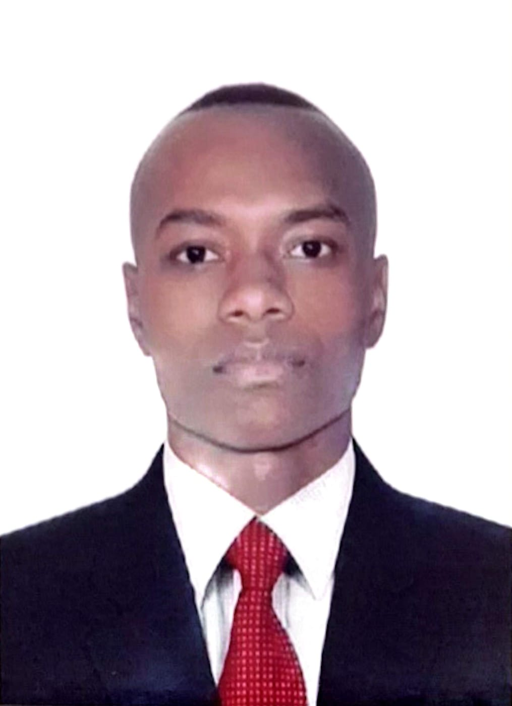

JOSE DEYNER LANDAZURI
SISTEMA EN DESARROLLO

Descripción Personal
soy una persona responsable con ganas de progresar y llegar hacer empresario compartir el conocimiento con los demás y aprender de los demás, me gusta trabajar en equipo y ayudar a los demás.
TECNICO BACHILLER COMERCIAL
- LICEO MIXTO LAS LAJAS - TECNICO COMERCIAL
- SEMINARIO REPARACION DE CELULARES
Experiencias Laborales
-
auxuliar de bodega durnate 6 años en el area de alistamiento,despacho control de inventario entre otras funciones
Habilidades
EN ELECTRONICA
- DIAGNOSTICO DE FALLAS
- REPARACION DE DISPOSITIVOS ELECTRONICOS
Hobbies
- JUGAR FUTBOOL
- SALIR EN MOTO A CONOCER LUGARES
- ESCUCHAR MUSICA
- INVESTIGAR SOBRE TECNOLOGIA Y REPARACIONES
¿Por qué estoy estudiando esta carrera?
siempre he querido aprender sobre tecnología y su impacto en la sociedad y complementarlo con la electronica y llegar hacer un empresario
Expectativas al finalizar la carrera
Al finalizar la carrera, espero:
- Conseguir un trabajo como desarrollador en una empresa donde pueda seguir aprendiendo.
- Participar en proyectos desafiantes que me permitan crecer profesionalmente.
- Contribuir a proyectos de código abierto